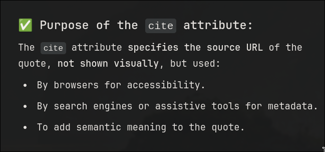

Table
table- tag is used to create a table.
thead- tag is used for the header section of the table
th- tag is used to create a header for the table
tbody- tag is used to create the body for the table
tr- tag is used to create a row in the table
td- corresponding to the cell this fills in the specified data in a cell that is td in that
particular row specified by tr
tfoot- similar to
thead
- secondary use of these tags is to follow semantics in order to apply appropriate CSS for a corresponding relations
rowspan = n- One particular row uses specified number of rows .
Essentially one row takes the space of specified number of rows
colspan = n- Self-explainatory
caption- can be used to give captions to the elements inside whom these are specified
List
There are three main types of list
ordered unordered and Defination
- Ordered List have bullets like numbers, roman numbers, alphabets
- Unordered list have bullets that do not follow any orders like : dots, star, arrow pointers
dl: is the defination list tag
dt: defination title
dd: defination defination/data
Use the type attribute to specifiy the type of bullets
example: type="i" , type="I", type="1"[default], type="a", type="A"
Entities
aka escape sequence
This will help us to show symbols like less than or greaters than using < for tags <
> for >
Other examples:
-
©
- for copyright symbol
- for non-breaking-spaces
blockquote- is used for quotations
- This is a citations used with quote tag <q>
The
cite tags implications might not be visible to the naked eye but :

- always use
code
- tag inside the
pre tag inorder to maintain the spacing and lining of the code intact
-
charset
- is an attribute for the
meta tag inorder to specify the encoding format / character set used in the document
-
canvas
- is used to print graphical images similar to
svg but these images could mostly move
And sometimes show other webpages in the page where you speicified canvas . The catch is you get to specify the sizing and borders and stuff
No it is called iFrames
Next